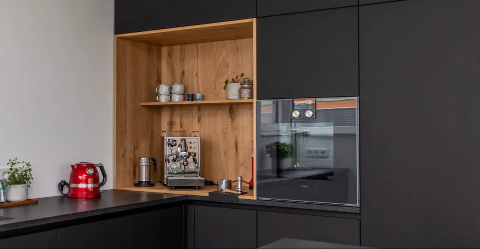
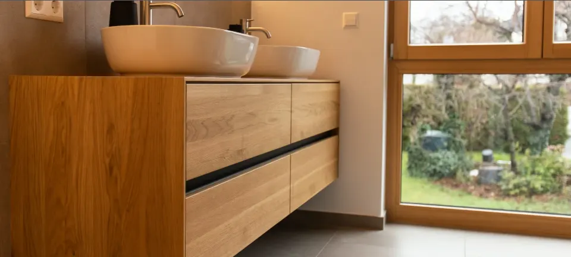
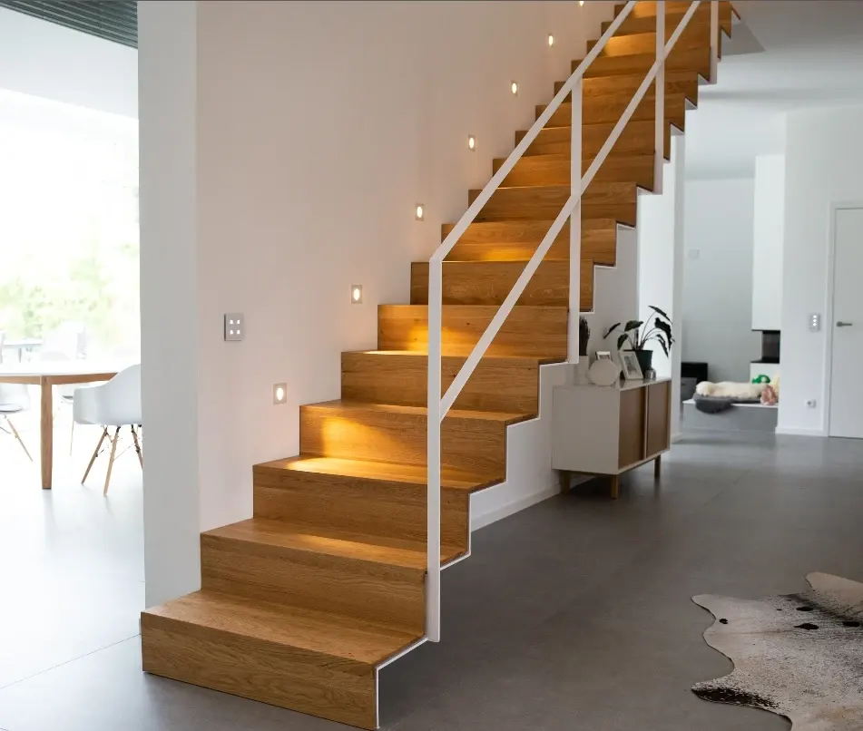
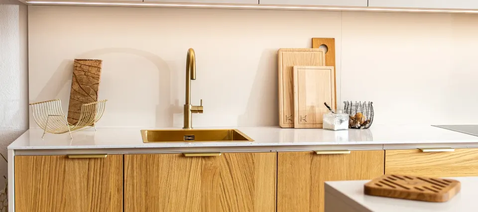
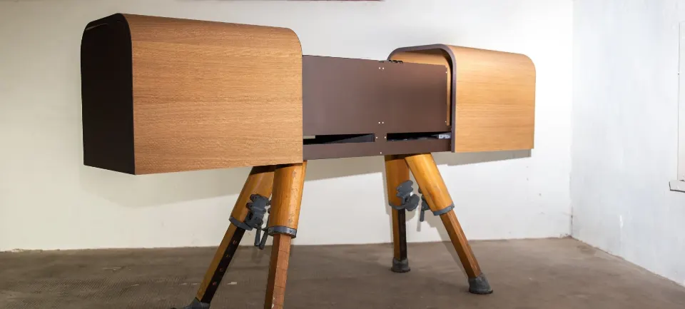
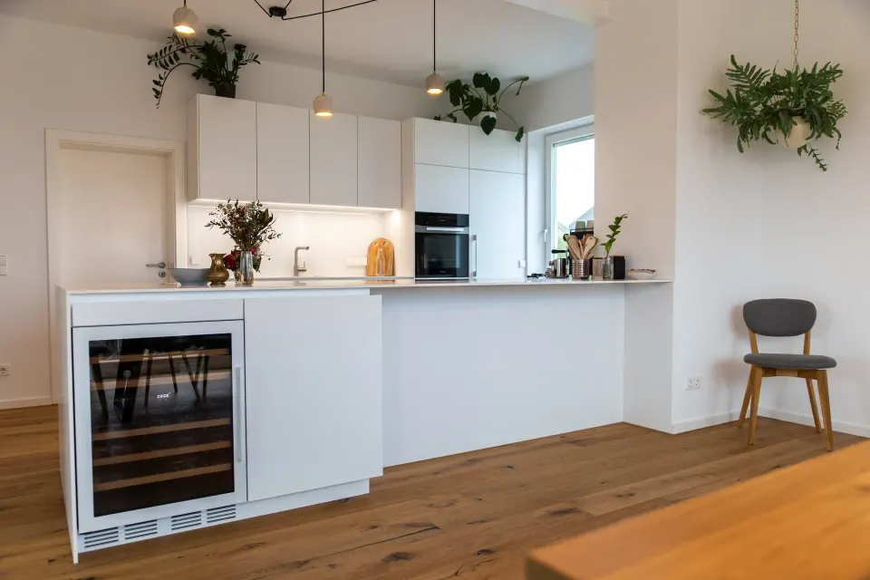
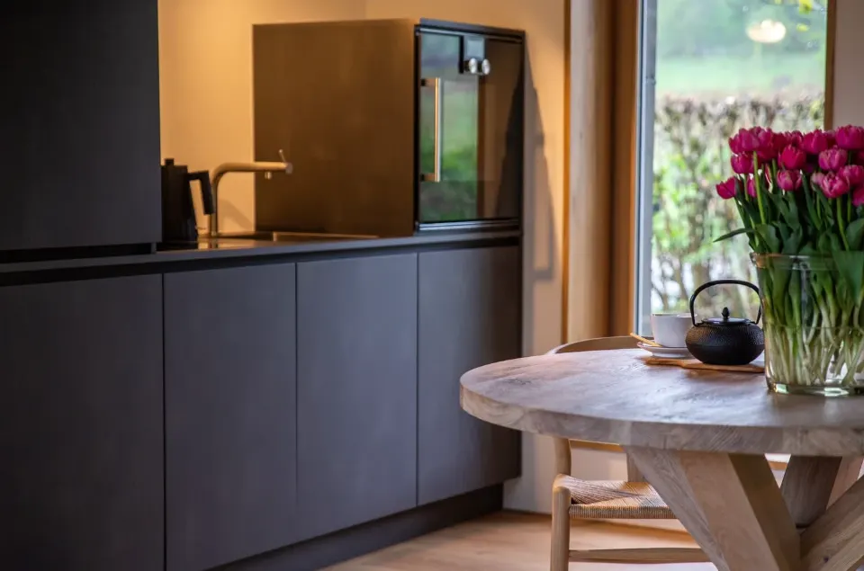

Referenzen aus Landau und der Südpfalz
Schaut gerne, an welchen Projekten wir zuletzt gearbeitet haben. Ist was für euch dabei? Dann meldet euch per Telefon, Mail oder Kontaktformular.

Küche Schwarz & Eiche
KücheGrifflose Küche in Mattschwarz mit Kochinsel und einer Kaffeebar aus Eiche.

Badmöbel & Waschtische
BadWaschtische aus Eiche massiv – vom Gäste-WC bis zum Doppelwaschtisch.

Treppe, Garderobe & Schrank
InnenausbauFaltwerktreppe aus Eiche, Garderobenbank, Einbauschrank und Spiegel.

Küche Eiche & Messing
KücheFronten aus Eiche, Spüle und Griffleisten aus Messing.

Sideboard & Esstisch
MöbelEin Sideboard auf alten Turnbock-Beinen und ein Esstisch aus Eiche massiv.

Küche Weiß mit Theke
KücheOffene, grifflose Küche mit Theke und integriertem Weinkühlschrank.

Ferienhaus Westerwald
Küche · InnenausbauEin 50-m²-Häuschen, umgebaut zum Wochenendhaus.
Weitere Projekte
Einfamilienhaus Bellheim
Umsetzung eines Neubaus: Fischgrätparkett, Küche, Garderobe, Waschtisch, Türen, Spiegel.
Einfamilienhaus Landau
Modernes Einfamilienhaus in Anlehnung an den Bauhaus-Stil. Fokus auf hochwertige Materialien, gerade Linien, klare Kanten.
Bücher Knecht
Modulares Wandsystem und mobile Warenpräsentation für den Buchladen. Variabel. Schlicht. Nachhaltig.
Habt ihr ein Projekt im Kopf?
Erzählt uns kurz, was ihr vorhabt. Wir melden uns persönlich und kommen zum Aufmaß zu euch.
Projekt anfragen